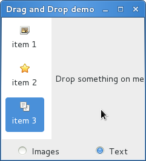

拖拽支持¶
注解
低于3.0.3版本的PyGObject有一个bug使得拖拽功能不正确，因此下面的例子要求 PyGObject 的版本大于等于3.0.3。
要在控件间设置拖拽功能，首先要使用 Gtk.Widget.drag_source_set() 选择一个
拖拽的源控件，然后通过 Gtk.Widget.drag_dest_set() 设置拖拽的目的控件，然后
在两个控件上处理相关的信号。
有一些专门的控件并不使用 Gtk.Widget.drag_source_set() 和
Gtk.Widget.drag_dest_set() ，而是使用一些特殊的函数
(例如 Gtk.TreeView 和 Gtk.IconView)。
一个基本的拖拽支持只要求源控件连接 “drag-data-get” 信号，目地控件连接
“drag-data-received” 信号。更多复杂的功能如指定释放的区域和定制拖拽的图片则要求
连接 额外的信号 并和其提供的 Gdk.DragContext 对象交互。
要在源和目的控件间传递数据，你必须使用 Gtk.SelectionData 的get与set函数
与 “drag-data-get” 和 “drag-data-received”
信号提供的 Gtk.SelectionData 变量交互。
Target Entries¶
要知道拖拽的源和目的发送和接收的数据，需要一个 Gtk.TargetEntry's
的列表。 Gtk.TargetEntry 描述了被拖拽源发送或被拖拽目的接收的一片数据。
有两种方式添加 Gtk.TargetEntry's 源或目的。如果是简单的
拖拽支持并且源目的节点都是不同的类型，可以使用函数组
mentioned here 。如果需要拖拽多种
类型的数据并对数据做更加复杂的操作，则需要使用 Gtk.TargetEntry.new() 创建
Gtk.TargetEntry的 。
拖拽方法与对象¶
-
class
Gtk.Widget¶ -
drag_source_set(start_button_mask, targets, actions)¶
设置控件为拖拽源。
start_button_mask 是多个:attr:Gdk.ModifierType 的组合设置了要使拖拽支持 发生要按下的按钮。 targets 是一个
Gtk.TargetEntry的列表描述了要 在源和目的之间传递的数据。 actions 是Gdk.DragAction的组合标记了 可能的拖拽动作。-
drag_dest_set(flags, targets, actions)¶
设置控件为拖拽的目的。
flags 为
Gtk.DestDefaults的组合配置了拖拽发生时的动作。 targets 是Gtk.TargetEntry的的列表描述了拖拽 源与目的之间的数据。 actions 是Gdk.DragAction的组合描述了可能的拖拽动作。添加
Gtk.TargetEntry为拖拽源或目的，其包含了一段文本。添加
Gtk.TargetEntry为拖拽源或目的，其包含了:class:GdkPixbuf.Pixbuf 。添加
Gtk.TargetEntry为拖拽源或目的，其包含了一个 URI 列表。-
-
class
Gtk.TargetEntry¶ -
static
new(target, flags, info)¶
创建一个新的目的节点。
target 为一个字符串描述了目的节点描述的数据的类型。
flags 控制数据在拖拽源/目的之间传递的条件，为
Gtk.TargetFlags的组合：Gtk.TargetFlags.SAME_APP- 只在相同程序间传递。Gtk.TargetFlags.SAME_WIDGET- 只在相同控件间传递。Gtk.TargetFlags.OTHER_APP- 只在不同程序间传递。Gtk.TargetFlags.OTHER_WIDGET- 只在不同控件间传递。
info 为应用程序ID，可以用来决定在一次拖拽操作中不同的数据片。
-
static
拖拽源信号¶
| 名字 | 触发时机 | 通常目的 |
|---|---|---|
| drag-data-get | 拖拽目地请求数据时 | 在拖拽源与目的间传递数据 |
| drag-data-delete | action为 Gdk.DragAction.MOVE 的拖拽操作完成 | 完成 ‘move’ 操作时删除源数据 |
| drag-data-end | 拖拽完成 | 撤销任何拖拽开始后的动作 |
Drag Destination Signals¶
| 名字 | 触发时机 | 通常目的 | |
|---|---|---|
| drag-motion | 拖拽图标移动到目地区域 | 只允许拖拽到指定的区域 |
| drag-drop | 在目地区域释放了图标 | 只允许在指定的区域释放数据 |
| drag-data-received | 拖拽目地收到了数据 | 在源与目地之间传递数据 |
Example¶
1 2 3 4 5 6 7 8 9 10 11 12 13 14 15 16 17 18 19 20 21 22 23 24 25 26 27 28 29 30 31 32 33 34 35 36 37 38 39 40 41 42 43 44 45 46 47 48 49 50 51 52 53 54 55 56 57 58 59 60 61 62 63 64 65 66 67 68 69 70 71 72 73 74 75 76 77 78 79 80 81 82 83 84 85 86 87 88 89 90 91 92 93 94 95 96 97 98 99 100 101 102 103 104 | from gi.repository import Gtk, Gdk, GdkPixbuf
(TARGET_ENTRY_TEXT, TARGET_ENTRY_PIXBUF) = range(2)
(COLUMN_TEXT, COLUMN_PIXBUF) = range(2)
DRAG_ACTION = Gdk.DragAction.COPY
class DragDropWindow(Gtk.Window):
def __init__(self):
Gtk.Window.__init__(self, title='Drag and Drop demo')
vbox = Gtk.Box(orientation=Gtk.Orientation.VERTICAL, spacing=6)
self.add(vbox)
hbox = Gtk.Box(spacing=6)
vbox.pack_start(hbox, True, True, 0)
self.icon_view = DragSourceIconView()
self.drop_area = DropArea()
hbox.pack_start(self.icon_view, True, True, 0)
hbox.pack_start(self.drop_area, True, True, 0)
button_box = Gtk.Box(spacing=6)
vbox.pack_start(button_box, True, False, 0)
image_button = Gtk.RadioButton.new_with_label_from_widget(None, 'Images')
image_button.connect('toggled', self.add_image_targets)
button_box.pack_start(image_button, True, False, 0)
text_button = Gtk.RadioButton.new_with_label_from_widget(image_button, 'Text')
text_button.connect('toggled', self.add_text_targets)
button_box.pack_start(text_button, True, False, 0)
self.add_image_targets()
def add_image_targets(self, button=None):
targets = Gtk.TargetList.new([])
targets.add_image_targets(TARGET_ENTRY_PIXBUF, True)
self.drop_area.drag_dest_set_target_list(targets)
self.icon_view.drag_source_set_target_list(targets)
def add_text_targets(self, button=None):
self.drop_area.drag_dest_set_target_list(None)
self.icon_view.drag_source_set_target_list(None)
self.drop_area.drag_dest_add_text_targets()
self.icon_view.drag_source_add_text_targets()
class DragSourceIconView(Gtk.IconView):
def __init__(self):
Gtk.IconView.__init__(self)
self.set_text_column(COLUMN_TEXT)
self.set_pixbuf_column(COLUMN_PIXBUF)
model = Gtk.ListStore(str, GdkPixbuf.Pixbuf)
self.set_model(model)
self.add_item('item 1', 'image')
self.add_item('item 2', 'gtk-about')
self.add_item('item 3', 'edit-copy')
self.enable_model_drag_source(Gdk.ModifierType.BUTTON1_MASK, [], DRAG_ACTION)
self.connect('drag-data-get', self.on_drag_data_get)
def on_drag_data_get(self, widget, drag_context, data, info, time):
selected_path = self.get_selected_items()[0]
selected_iter = self.get_model().get_iter(selected_path)
if info == TARGET_ENTRY_TEXT:
text = self.get_model().get_value(selected_iter, COLUMN_TEXT)
data.set_text(text, -1)
elif info == TARGET_ENTRY_PIXBUF:
pixbuf = self.get_model().get_value(selected_iter, COLUMN_PIXBUF)
data.set_pixbuf(pixbuf)
def add_item(self, text, icon_name):
pixbuf = Gtk.IconTheme.get_default().load_icon(icon_name, 16, 0)
self.get_model().append([text, pixbuf])
class DropArea(Gtk.Label):
def __init__(self):
Gtk.Label.__init__(self, 'Drop something on me')
self.drag_dest_set(Gtk.DestDefaults.ALL, [], DRAG_ACTION)
self.connect('drag-data-received', self.on_drag_data_received)
def on_drag_data_received(self, widget, drag_context, x, y, data, info, time):
if info == TARGET_ENTRY_TEXT:
text = data.get_text()
print 'Received text:%s' %text
elif info == TARGET_ENTRY_PIXBUF:
pixbuf = data.get_pixbuf()
width = pixbuf.get_width()
height = pixbuf.get_height()
print 'Received pixbuf with width %spx and height %spx' %(width, height)
win = DragDropWindow()
win.connect('delete-event', Gtk.main_quit)
win.show_all()
Gtk.main()
|